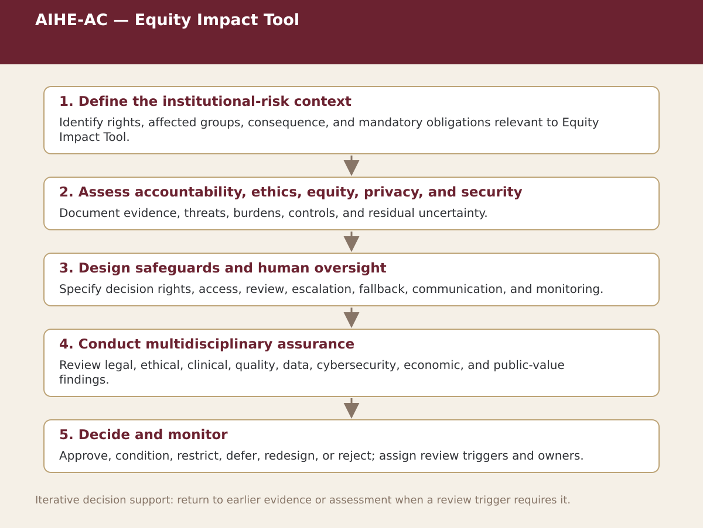

Supplemental specialist tool · Chapter 10
AIHE-AC — Equity Impact Tool
Identify affected groups, barriers, harms, mitigations, costs, residual concerns, and monitoring indicators.

Process steps
| Step | Purpose | Review |
|---|---|---|
| 1. Define the institutional-risk context | Identify rights, affected groups, consequence, and mandatory obligations relevant to Equity Impact Tool. | Proceed, revise, escalate, restrict, or stop as appropriate |
| 2. Assess accountability, ethics, equity, privacy, and security | Document evidence, threats, burdens, controls, and residual uncertainty. | Proceed, revise, escalate, restrict, or stop as appropriate |
| 3. Design safeguards and human oversight | Specify decision rights, access, review, escalation, fallback, communication, and monitoring. | Proceed, revise, escalate, restrict, or stop as appropriate |
| 4. Conduct multidisciplinary assurance | Review legal, ethical, clinical, quality, data, cybersecurity, economic, and public-value findings. | Proceed, revise, escalate, restrict, or stop as appropriate |
| 5. Decide and monitor | Approve, condition, restrict, defer, redesign, or reject; assign review triggers and owners. | Proceed, revise, escalate, restrict, or stop as appropriate |
Status. This process map is a navigation and decision-support aid. Adapt it to the relevant jurisdiction, institution, population, workflow, technology version, evidence cut-off, and accountable authority.